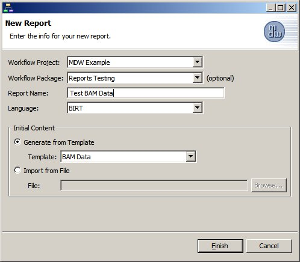

MDW Reports
MDW uses BIRT for its reporting engine.
Reports can be written against the MDW runtime database for summarizing high-level information about processes and tasks.
For more detailed tracking of workflow progress, MDW provides a general-purpose BAM (Business Activity Monitoring) schema.
To configure the capture of BAM-related data, you can use the Monitoring configurator tab in Designer.
In MDW, BIRT reports are designed using either Eclipse or Designer RCP.
BIRT provides extensive report design capabilities, including sophisticated crosstabs and charting, and MDW Designer exposes these capabilities so that users can create custom reports.
BIRT documentation is available in Designer under the help topic Designing Reports using BIRT.
The BIRT report design artifacts are XML documents that are stored as Assets which support standard versioning, packaging and locking features.
The runtime database a report is querying does not necessarily need to be the same database where it resides; in fact, the runtime database can be selected dynamically (as illustrated in a number of the MDW report templates).
Report Templates
MDW provides some basic report templates to help you quickly get started creating BIRT reports.
To create a new BIRT report based on a template, right click on a workflow package in Process Explorer view and select New > Report.

The "BAM Data" template generates a blank report design that includes a preconfigured dataset corresponding to the database where the report resides.
When you have a report design open in Designer, some additional views will come into play (Data Explorer, the BIRT Palette, and the BIRT Property Editor).
For reports to allow dynamic selection of the source database, a special data called "Workflow Environments DataSet" is included in some report templates.
This dataset is used to populate the "Runtime Data From" dropdown to include the databases corresponding to your workspace, as well as any related environments it can discover.
The Workflow Environments DataSet is a scripted dataset that uses a special MDWFunctions javascript library which also includes other functions that may be helpful when designing reports.
The main dataset in the BAM Data template is the Orders DataSet. The datasource for this dataset should point to an instance of the MDW BAM schema.